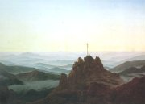

Friedrich: Krajina z ostrova Rujany
|
NÌMECKİ ROMANTISMUS
Øada svìtovıch romantikù obdivovala díla pøedstavitelù nìmeckého preromantismu (Goetha, Schillera, Bürgera a Herdera). Vycházela z nich i nová generace nìmeckıch umìlcù a myslitelù. Filozof Friedrich Schlegel (1772-1829) zformuloval program tzv. rané romantické školy. Velkı vliv na evropské myšlení mìli Johann Gottlieb Fichte (1762-1814), Friedrich Schelling (1775-1854) a pøedevším Georg Wilhelm Friedrich Hegel (1770-1831), kterı se zamìøil na filozofii dìjin a vıvoj ducha. Tento idealistickı filozof vyuíval hlavnì dialektickou metodu.
Prùkopníkem nìmecké romantické malby byl Philipp Otto Runge (1777-1810). Snové romantické vıjevy maloval Caspar David Friedrich (1774-1840). Ve Vídni pùsobili nazaréni, kteøí zpracovávali námìty z nìmeckého støedovìku. Ilustrátor Carl Spitzweg (1808-1885) mìl blízko k biedermeieru.
|
Historie
Nìmecko bylo rozdìleno na drobné státeèky a do roku 1871. Stále vìtšího vıznamu nabıvalo Prusko. Napoleon ho roku 1806 porazil a vytvoøil na nìmeckém území vestfálské království. Po jeho pádu vznikl nìmeckı spolek, ve kterém mìlo hlavní slovo Rakousko. Hnutí Mladé Nìmecko (1830-1848) sdruovalo revoluèní spisovatele. Bìhem roku 1848 vypukla øada republikánskıch povstání a ve Frankfurtu nad Mohanem zasedlo Národní shromádìní, které pøijalo celonìmeckou ústavu.
|
Novalis (1772-1801)
Novalis (vlastním jménem Georg Friedrich Philipp von Hardenberg) se pøátelil s Schillerem. Velmi ho poznamenala smrt snoubenky Sofie a bratra Erasma, kteøí zemøeli na tuberkulózu. Této chorobì podlehl také Novalis. Tvoøil filozofické fragmenty – Kvìtinovı prach, Víra a láska, Køesanství èili Evropa, sloil básnickı cyklus Hymny noci a zaèal psát román Jindøich z Ofterdingen.

Friedrich: Moøe ledu
|
Novalis: Jindøich z Ofterdingen
Dìj románu se odehrává ve 13. století. Hlavní postavou je støedovìkı minnesänger Jindøich z Ofterdingen, kterého tradice povauje za autora Písnì o Nibelunzích. Jindøich spatøí ve snu modrı kvìt – symbol opravdové poezie, slávy a štìstí a vydává se ho hledat. V Augsburgu poznává básníka Klingsohra a zamiluje se do jeho dcery Matyldy.
Dìj románu doplòují básnì, pohádky a úvahy o smyslu poezie. Novalis staèil dokonèit pouze jeho první díl – Oèekávání, další èásti (Naplnìní a Jas) se dochovaly jen v náèrtcích. Zprvu realistickı román se mìl promìnit ve fantastickou alegorii. Jindøich poznává pravou podstatu pøírody, procestuje rùzné èásti svìta (Itálie, Orient) i historické epochy (starovìkı Øím, doba Fridricha I.) a koneènì nachází modrı kvìt.
|

Franz Gareis: Novalis
Friedrich: Opatství v dubovém lese
|
Heinrich Heine (1797-1856)
Heinrich Heine [hajnrich hajne]
kvùli neustálım konfliktùm odešel z Nìmecka do Paøíe, kde se spøátelil s vıznamnımi romantiky (Hugo, Dumas, Chopin...). Za úèast v hnutí Mladé Nìmecko zakázal roku 1835 nìmeckı snìm vydávání jeho knih. Napsal básnické sbírky Kniha písní, Nìmecko – Zimní pohádka a Romancero, spis Romantická škola a fejetony Obrazy z cest.
|
Heinrich Heine: Kniha písní
Jádrem rozsáhlé básnické sbírky Kniha písní jsou milostné básnì – elegie (Lorelei), balady nebo romance (Don Ramiro). Další verše líèí ivelnou pøírodu (cyklus Severní moøe) nebo popisují autorovy nálady, proitky a názory. Øada básní vyznívá ironicky.
|
Heinrich Heine
Která báseò tì zaujala nejvíce? Proè?
|
Bratøi Grimmové
Jacob (1795-1863) a Wilhelm (1786-1859) Grimmové byli prùkopníky nìmecké folkloristiky. Zatímco Wilhelm pohádky hlavnì sbíral a upravoval, Jacob se je snail podrobit dùkladnému filologickému rozboru. Oba bratøi pùsobili na univerzitì v Berlínì jako profesoøi. K jejich dalším pracím patøí sbírka Nìmecké povìsti, vıkladovı slovník nìmèiny nebo Nìmecká mluvnice.

Friedrich: Strom
|
Nìmecké pohádky bratøí Grimmù
Bratøi Grimmové sbírali pohádky nejen kvùli zájmu o lidové tradice. Chtìli dokázat, e nìmecké obyvatelstvo sdílí spoleènou kulturu, pøestoe neije ve spoleèném státì, a podpoøit sjednocení Nìmecka. Rùzné varianty pohádek se snaili oprostit od pozdìjších rozšíøení. Zajímaly je toti prapùvodní mıty, ze kterıch se tyto pøíbìhy zrodily. Zaznamenané texty upravovali i stylisticky. Sbírka Pohádky pro dìti a celou rodinu obsahovala v koneèné redakci na 200 pøíbìhù. K nejznámìjším patøí Popelka, Snìhurka, Šípková Rùenka, Jeníèek a Maøenka, Èervená Karkulka, abí král, Obušku, z pytle ven, Bílı had, O Ïáblovi a jeho tøech zlatıch vlasech, Koešinka nebo Chytrá chalupnická dcerka.
|

Bratøi Grimmové
Øada nìmeckıch pohádek má i své èeské varianty. Zkus pøiøadit následující èeské názvy k pohádkám bratøí Grimmù: O perníkové chaloupce, Zlatovláska, O neposlušnıch kùzlátkách, O tøech zlatıch vlasech dìda Vševìda, Princezna se zlatou hvìzdou na èele, O chytré horákyni.
|
Friedrich Hölderlin
(1770-1843)
Hölderlin pracoval jako domácí uèitel. Pøátelil se s Schillerem a Hegelem. Na sklonku ivota propadl tìkım depresím, které mu znemonily pokraèovat v tvorbì. Napsal básnì Hymnus na svobodu a Hymnus na lidstvo, divadelní hru Empedokles a román Hyperion.
|
Friedrich Hölderlin: Hyperion aneb
eremita v Øecku
Hölderlinùv román má formu dopisù, které píše Hyperion svému pøíteli Bellarminovi. Ètenáø mùe sledovat postupné dozrávání hlavního hrdiny. Hyperion proívá bezstarostné mládí, lásku k Diotimì a úèastní se povstání Øekù proti turecké nadvládì. V dlouhıch filozofickıch pasáích popisuje své názory na svìt.
|

Friedrich Hölderlin
Jakı je Hyperion?
Co si myslí o Nìmcích?
Souhlasíš s ním? Proè?
|
Ernst Theodor Amadeus Hoffmann (1776-1822)
Hudební skladatel, dirigent a malíø E.T.A. Hoffmann napsal romány Ïáblùv elixír a ivotní názory kocoura Moura. Další tajemné, satirické a hororové pøíbìhy shrnul do rozsáhlıch cyklù Fantastické povídky po Callotovì zpùsobu a Serapionovi bratøi.

Friedrich: Køí
|
Hoffmannovy povídky
Hoffmann se snail vzbudit ve ètenáøi dojem, e jeho texty jsou autentické záznamy, dopisy nebo vzpomínky skuteènıch osob. Proto je nìkdy vydával anonymnì. Ve svıch povídkách vyuíval hluboké znalosti hudby a tajemno alchymistickıch postupù. Mezi jeho nejznámìjší povídky patøí Rytíø Gluck, Zlatı koøenáè, Pískaø, Zachısek zvanı Rumìlka, Louskáèek a myší král nebo Mistr Blecha.
|
Hoffmannùv autoportrét
Jak na tebe pùsobí zaèátek Hoffmannovy povídky?
Zkus ji dokonèit a pak si pøeèti Hoffmannovu verzi.
Kdo napsal operetu Hoffmannovy povídky?
Víš, kdo byl Callot?
|
Internetové stránky
Novalis
Novalis
Heine
Grimmové, pohádky
Grimmové
Hölderlin
Hölderlin
Hoffmann
Hoffmann
Neuschwanstein, zámek
Walhalla, památník u Regensburgu

Karl Friedrich Schinkel: Skalní brána
|
Doporuèená èetba
Berkovskij, Naum: Nìmecká romantika, pøel. R.Grebeníèková, Odeon, Praha 1976
Grimmové, Jacob a Wilhelm: Pohádky, pøel. J.Fuèíková, Odeon, Praha 1988
Deset nìmeckıch novel, Èeskoslovenskı spisovatel, Praha 1962 (Kleist, Hoffmann...)
Hledání modrého kvìtu, Støedoèeské nakladatelství a knihkupectví, Praha 1988
Heine, Heinrich: Kniha písní, pøel. A.Pikhart, Otto, Praha 1935
Heine, H.: Meè a plamen, pøel. J.Hiršal, Mladá fronta, Praha 1962
Heine, H.: Obrazy z cest
Heine, H.: O Nìmecku, Praha 1951
Heine, H.: Písnì a lamentace, Èeskoslovenskı spisovatel, Praha 1966
Hoffmann, E.T.A.: Ïáblùv elixír, pøel. H.Karlach, Odeon, Praha 1971
Hoffmann, E.T.A.: Fantastické povídky, pøel. J.Bílı, Mladá fronta, Praha 1959
Hoffmann, E.T.A.: Mistr Blecha, Odeon, Praha 1976
Hölderlin, Friedrich: Hyperion aneb eremita v Øecku, pøel. A.Pešek, Odeon, Praha 1988
Hölderlin, F.: Svìtlo lásky, pøel. V.Mikeš, Èeskoslovenskı spisovatel, Praha 1988
Kvìtinovı prach, pøel. I.Slavík, Mladá fronta, Praha 1967
Nezval, Vítìzslav: Pøeklady II, Èeskoslovenskı spisovatel, Praha 1984 (Heine)
Nìmecké pohádky, pøel. H.Helceletová, Praha 1964
Novalis: Modrá kvìtina, pøel. V.Feldstein, Odeon, Praha 1971 (Jindøich z Ofterdingen, Hymny noci)
Novalis: Zázraèná hra svìta, Praha 1991 (fragmenty)
Spisy H.Heina (7 svazkù), SNKLHU
Stromšík, Jiøí: Od Grimmelshausena k Dürrenmatovi, H&H, Praha 1994
Z nìmecké poezie, Praha 1957
|
Pøiprav si referát o nìkteré z uvedenıch knih nebo internetovıch stránek.
Runge: Ráno

Památník Valhala leí nedaleko Øezna. Jsou zde pohøbìni nìmeètí velikáni.
|
|